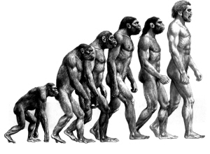

捍卫马克思5：马克思，时代精神、世界良心！（连载二）
2006/9/22 11:49:42

东土旧学，归根于易。易之观照，以被观照者为依。如此观照，巫教所源；天人合一，巫教所流。巫教，世间共有之原始宗教，国人所好之祖先崇拜，亦源于此。由此而有儒家之“克己复礼”、道家之“人法地，地法天，天法道，道法自然。”。道、儒，不离易。易之范式，即巫教以被观照者为依之观照模式也。
此论，判尽东土旧学，前无古人而不必古人。若无佛法东来，东土学问恐恒困于此。宋理学、明心学、道内丹，窃禅宗皮毛犹得大变大兴，竟复出主入奴，人心之可怜诚可笑矣。然此难掩东土之大乘气象，禅宗于东土而光大，终不负了前人万里取经之苦心。
以被观照者为依之观照模式,非类唯物之论。如以上帝为被观照者，岂属唯物？唯心亦然。理论之模式，即观照之模式。有一观照模式而有相类之理论传统，此乃民族、时代之指纹。唯心、唯物，二元之陋法，不离意之妄测，皆本诸观照。离观照，无一理可论矣。
以被观照者为依之观照，非独盛于东土，古希腊亦然。此法乃华夷所共依，同源诸巫教，名之谓“巫教观照范式”。凡有论而不离此范式者，皆巫教之子孙，蒙昧之痴愚也。前康德之西学，皆其属。西学无康德，则万古长夜，马氏亦无由得出矣。
（待续）
回复